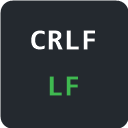

GitHub Line Endings
Installed. GitHub shows LF and CRLF files the same way. Now you can tell them apart.
On a file page
Open any file on github.com. A box in the bottom-right corner shows its line endings:
Line endings: CRLF
You will see LF, CRLF, Mixed (3 CRLF, 40 LF) or no line breaks. Images, PDFs and other binary files are skipped.
On a pull request
Every tab of a pull request lists the line endings of each changed file:
▼ Line endings in diff: 1 CRLF, 2 LF
CRLF src/Program.cs
LF README.md
LF package.json
Click the first line of the box to minimize it. It stays minimized while you browse in that tab.
Only the lines shown in the diff are checked. Open the file itself to check the whole file.
Try it
- A CRLF file (microsoft/terminal)
- An LF file (git/git)
Good to know
- Works on github.com only, not GitHub Enterprise servers.
- Files with old Mac line endings (a lone CR, no LF) show
no line breaks. - UTF-16 text files are treated as binary and skipped, the same way Git treats them.
- Files stored with Git LFS may not load.
- Very large pull requests may show an error if GitHub refuses or times out on the diff.
- New commits pushed to an open pull request appear within a minute, or right away when you reload the page.
Privacy
Nothing is collected or sent anywhere. The extension only downloads the file or diff you are viewing from GitHub, with your own login, and forgets it when you leave.